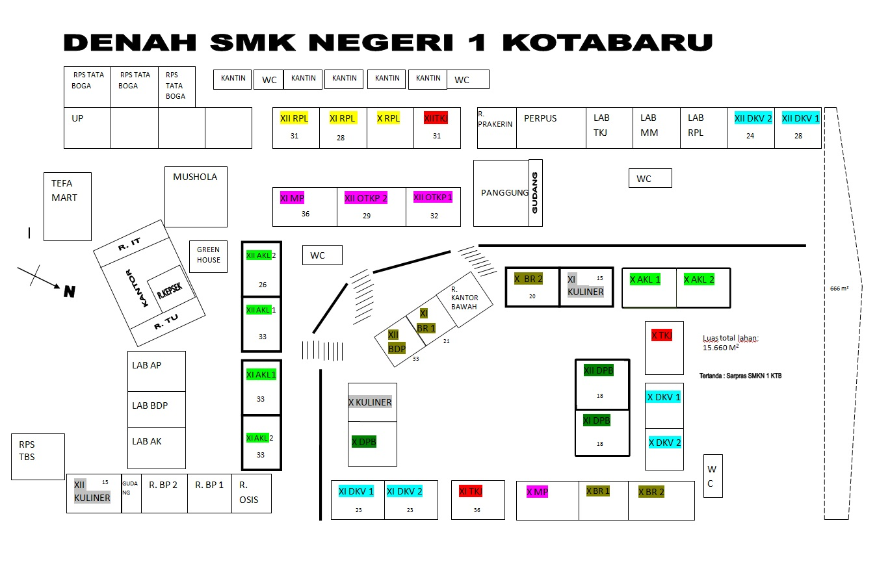

Pendahuluan
A. Sejarah SMK NEGERI 1 KOTABARU
Deskripsi Umum
Pada jaman dahulu Smk Negeri 1 Kotabaru adalah sebuah sekolah masyarakat Cina yang dikenal dengan nama Jungkun. Pada tahun 1963 diambil alih oleh pemerintah Indonesia kemudian kala itu diubah menjadi SMEP (Sekolah Menengah Ekonomi Pertama) sesuai dengan surat keputusan Mendikbud RI No : 73/B-3/KEDJ 09/Maret 1964.

Foto Jurusan tata niaga Tahun 1982
Kemudian berganti nama menjadi SMEA (Sekolah Menengah Ekonomi Atas) dan pada tahun 1997 sekolah ini Kembali berganti nama menjadi SMK (Sekolah Menengah Kejuruan) dan pada tahun 1999 kemudian sekolah ini diresmikan menjadi sekolah yang berstatus negeri sehingga saat ini kita mengenal dengan nama SMK Negeri 1 Kotabaru.
Deskripsi Khusus
SMEP ( Sekolah Menengah Ekonomi Pertama)
SMEP adalah sekolah yang didirikan pada tahun 1964 oleh pemerintah Kabupaten Kotabaru dengan tujuan meningkatkan mutu anak didik yang dibekali oleh keahlian jurusan dengan program studi manajemen bisnis dengan kompetensi keahlian yang diberi nama Tata Niaga.
SMEA (Sekolah Menengah Ekonomi Atas)
SMEA adalah hasil perkembangan dari SMEP yang dikembangkan oleh pemerintah Kabupaten Kotabaru pada tahun 1970, dengan berkembangnya sekolah ini dan diliputi oleh bertambahnya jurusan dengan program keahlian yang sama namun, kompetensi keahliannya yang berbeda yaitu Tata Niaga, Tata Buku, dan Tata Usaha. Sekolah ini terletak dipusat Kotabaru tepatnya Jalan Singabana (sekarang kawasan tersebut telah menjadi taman kota)., pada tahun 1990 SMEA membuka lokal kelas baru di daerah Sigam dengan jumlah lokal kelas 6 buah, ditambah dengan 1 buah ruang guru dan tata usaha. Setelah terjadi kebakaran pada tahun 1993, lokasi sekolah SMEA ikut berpindah total kedaerah Sigam.

Alumni SMEA Tahun 1993
SMKN (Sekolah Menengah Kejuruan Negeri)
Sejak tahun 1997 setelah SMEA berpindah lokasi, dan berganti nama menjadi SMKN 1 Kotabaru. SMKN 1 Kotabaru mendapat beberapa pembaruan terutama dari segi lokal kelas dengan fasilitas kelas termasuk alat praktek jurusan, hal ini alat-alat yang terdahulu sudah ikut terbakar saat kebakaran pada tahun 1963. Pada tahun 1998 sekolah ini resmi menjadi sekolah yang berstatus negeri, sehingga saat ini kita kenal dengan SMK Negeri 1 Kotabaru. SMK Negeri 1 Kotabaru didirikan di tanah dengan luas ± 2.560 meterpersegi, dan ± 5 km dari pusat kota. Sekarang SMK Negeri 1 Kotabaru mempunyai 33 ruang kelas, 2 kantor dan ruangan guru, 1 ruang tata usaha, 8 ruang praktek jurusan, 1 ruang perpustakaan, ± 6 buah kantin sekolah, ± 12 buah WC dengan lokasi yang berbeda-beda, 1 laboratorium Bahasa dan KKPI atau komputer, 1 ruang Unit Produksi (UP), Green House, Musholla dengan 2 lantai, TEFA (Teaching Factory), mempunyai 8 jurusan dan Mempunyai lapangan Basket dan Volly.
SMKN 1 Kotabaru adalah sekolah yang mengadopsi pendekatan inovatif Teaching Factory (TEFA). Siswa terlibat langsung dalam proyek nyata dan dibimbing oleh guru dan mentor industri . Mereka mengembangkan keterampilan teknis, sosial, dan mempersiapkan diri untuk dunia kerja. SMKN 1 Kotabaru menjalin kemitraan dengan industri untuk magang siswa, seperti Bank Mini SMKN 1 Kotabaru yang bekerjasama dengan Bank BSI dan SKAWAN MART yang bekerjasama dengan ALWIESTA MART.
SMKN 1 Kotabaru mempunyai Green House yang dikelola langsung oleh para siswa dan guru. Green House merupakan tempat penanaman berbagai jenis tanaman yang kekinian serta mudah untuk digunakan. Para siswa dapat menanam berbagai jenis tanaman disini sehingga hasilnya lebih maksimal dan dapat bermanfaat bagi semua siswa maupun sekolah.
Tidak kalah hebat, SMKN 1 Kotabaru ternyata juga memiliki Musholla yang berlantai dua. Musholla ini digunakan untuk sholat berjamaah bersama siswa, siswi, dan para guru. Dan baru saja Ramadhan kemarin, Musholla ini digunakan sebagai tempat kegiatan pesantren Ramadhan, dan biasanya Pesantren Ramadhan dilaksanakan satu kali setahun setiap bulan Ramadhan.
Visi , Misi, Motto dan Lagu Mars SMK
adalah sebagai berikut :
"Menjadi Lembaga Pendidikan yang menghasilkan lulusan yang Unggul, Berkarakter, dan Berwirausaha"
MISI
- Mengembangkan kurikulum yang sesuai dengan kebutuhan dunia kerja
- Meningkatkan karakter siswa yang sesuai dengan Pelajar Pancasila
- Melatih siswa beradaptasi dalam budaya dunia kerja di dunia kerja dan industry
- Melatih siswa beradaptasi dalam budaya dunia kerja di dunia kerja dan industry
- Menanamkan jiawa wirausaha dan melatih wirausaha berbasis technosociopreneur
- Menjalin kemitraan dengan pemangku kepentingan, dunia kerja, dan industry
- Menyiapkan siswa untuk menempuh Pendidikan lanjutan di era global
|
|
| |
| |
| |
| |

Lagu Mars SMKN 1 Kotabaru
Kepala Sekolah & Tenaga Pendidik
A. Kepala Sekolah
Berikut adalah urutan kepala sekolah yang pernah menjabat di SMK Negeri 1 Kotabaru selama beberapa periode.
| No | Nama | Periode |
|---|---|---|
| 1 | R. Susatyo | 1962 – 1964 |
| 2 | H. Bahrun Badri | 1964 – 1966 |
| 3 | M. Thamrin Wahid | 1966 – 1969 |
| 4 | Masrani B. | 1969 – 1982 |
| 5 | Drs. rusdiansyah Habibi | 1982 – 1990 |
| 6 | Tuhalus, BA | 1990– 1992 |
| 7 | Drs. M. Hasnan Yahya | 1992 – 1996 |
| 8 | Drs. Banjar Sadono | 1996 – 1999 |
| 9 | Drs.I Nyoman Rudi Kurniawan | 1999 – 2005 |
| 10 | Drs. Syamsurizali, MM | 2005– 2010 |
| 11 | Muhammad Ramlie, s.Pd,MM | 2010 – 2012 |
| 12 | Drs. H. Syamsurizali, MM | 2012 – 2017 |
| 13 | Drs. Sugiyantno, M.Si | 2017 – 2022 |
| 14 | M. Ramlie, S.Pd, MM | 2022 – Sekarang |
B. Pendidik dan Tenaga Kependidikan
| No | Nama | NIP / NIPPPK | PANGKAT / GOL. |
|---|---|---|---|
| 1 | M. RAMLIE, S.Pd., MM | 19650520 199103 1 014 | Pembina Tk. I/ IV/b |
| 2 | AHMAD, S. Pd | 19640623 198901 1 001 | Pembina Tk. I/ IV/b |
| 3 | H. SUHAIMI, S.Pd.Mat. | 19651116 199003 1 005 | Pembina Tk. I/ IV/b |
| 4 | Dra. SRI NURDIANA | 19660503 199512 2 004 | Pembina Tk. I/ IV/b |
| 5 | YUTAM,S.Pd. | 19660505 199412 1 002 | Pembina Tk. I/ IV/b |
| 6 | Dra. BARDIATI | 19650625 199403 2 006 | Pembina Tk. I/ IV/b |
| 7 | HJ. MAMIK MUJIATI | 19670513 199003 2 008 | Pembina / IV/a |
| 8 | MUKHTAR AKBAR, S.P d. | 19760802 200312 1 007 | Pembina / IV/a |
| 9 | RAUDATUR RAHMAH, S.P d. | 19790217 200312 2 007 | Pembina / IV/a |
| 10 | Hj. FITRIAH HAIRANI, S.P d. | 19750724 200501 2 007 | Pembina / IV/a |
| 11 | Hj.ERNA YULIDA, S.Sos | 19700628 199203 2 005 | Penata Tk. I / III/d |
| 12 | MUHAMMAD. RIZKANI, S.P d.. | 19770628 200312 1 004 | Pembina/IV/a |
| 13 | Hj. WAHIDAH, S.Ag | 19690605 200501 2 015 | Penata Tk. I / III/d |
| 14 | FAHRINA HANDAYANI, S.P d. | 19750418 200501 2 012 | Pembina/IV/a |
| 15 | ETIK SUMARYANI, S.P d. | 19820605 200604 2 016 | Pembina/IV/a |
| 16 | LILY PUSPAHANI, S.Pd | 19790805 200604 2 010 | Penata Tk. I / III/d |
| 17 | DOSTI PURBA, S.S | 19770811 200604 2 015 | Pembina/IV/a |
| 18 | DIYAH SAFITRI, SE | 19760924 200903 2 001 | Penata Tk. I / III/d |
| 19 | SRI SUSANTI, S. P d. | 19750224 200604 2 022 | Penata Tk. I / III/d |
| 20 | GUSTI NURUL FARIDAH, ST | 19741125 200604 2 018 | Penata Tk. I / III/d |
| 21 | Hj. YULI HANDAYANI, ME | 19760706 200903 2 002 | Pembina/IV/a |
| 22 | SITI NOR JUMAIDAH, SE | 19720319 200701 2 008 | Penata Tk. I / III/d |
| 23 | THERESIA SHITA WIDYASARI, S. P d. | 19800529 200903 2 007 | Penata Tk. I / III/d |
| 24 | EVI SULASTRI, S. P d | 19790702 200903 2 008 | Penata Tk. I / III/d |
| 25 | HENNI NOVITA SINAGA, S.P d. | 19811105 200903 2 006 | Penata Tk. I / III/d |
| 26 | MARIA FRANSISCA PURBA S.P d. | 19050522 200903 2 014 | Penata Tk. I / III/d |
| 27 | MULIANI, S.P d. | 19871107 200903 2 004 | Penata Tk. I / III/d |
| 28 | CHARISMA TRI WULANDARI, S.P d. | 19870314 201001 2 006 | Penata Tk. I / III/d |
| 29 | IRAWANTI DUNIS, S.P d. | 198404620 200903 2 018 | Penata Tk. I / III/d |
| 30 | NURDIN, S.Ag. | 19760703 200604 1 020 | Penata / III/c |
| 31 | RHANY DHAMAYANTHY, S. S. | 198404620 200903 2 018 | Penata / III/c |
| 32 | SITI RAHIMAH, S.Kom. | 198505513 201403 2 003 | Penata / III/c |
| 33 | NINA ELISA, S. E. | 19781224 200801 2 017 | Penata Muda Tk I / III/b |
| 34 | TAHTA SYAM'UTAMA PERSADA, S.P d. | 19920122 201503 1 002 | Penata Muda Tk I / III/b |
| 35 | MUHAMMAD FAJRIN NUR, S.Kom. | 19850930 201503 1 002 | Penata Muda Tk I / III/b |
| 36 | AINI ROSYADA, S.P d. | 19860508 202012 2 010 | Penata Muda / III/a |
| 37 | ABDUL RAHMAN, S.P d. | 19890414 202012 1 013 | Penata Muda / III/a |
| 38 | SITI MARYANI, S.P d. | 19891022 202012 2 010 | Penata Muda / III/a |
| 39 | RAHMAN, S.Kom. | 19900310 202012 1 012 | Penata Muda / III/a |
| 40 | AMIRA NURLAILI RACHMA, S.P d. | 19920620 202012 2 019 | Penata Muda / III/a |
| 41 | AMAR MA'RUF GAFFAR,S.Pd. | 19930813 202012 1 015 | Penata Muda / III/a |
| 42 | RUSMINAH VOLKANTY, S.Pd. | 19941121 202012 2 013 | Penata Muda / III/a |
| 43 | CRISNA YOGA PRATAMA, S.Pd. | 19950403 202012 1 008 | Penata Muda / III/a |
| 44 | MOHAMMAD ALIFAN, S. Kom. | 19901104 202221 1 001 | Penata Muda / IX | 45 | RUSMINAH VOLKANTY, S.Pd. | 19941121 202012 2 013 | Penata Muda / III/a |
| 46 | GUSTI RINI NOVITASARI, S. Pd. | 19881120 202221 2 005 | Penata Muda / IX |
| 47 | FAUZI AKBAR, S. Kom. | 19960726 202221 1 002 | Penata Muda / IX |
| 48 | ANTUN, S.Kom. | 19910310 202321 1 014 | Penata Muda / IX |
| 49 | ERNI YUSNITA, S.Pd. | 19860522 202321 2 019 | Penata Muda / IX |
| 50 | HENDRI ARIFIN, S. Kom | 19910802 202421 1 014 | Penata Muda / IX |
| 51 | YULIDAWATI, A.Ma. | 19850128 201406 2 004 | Pengatur / II/c |
| 52 | MARIATUL KIPTIYAH | 19850606 201406 2 004 | Pengatur / II/c/td> |
| 53 | SRI WARDHANI, SH. | GTT PROV | |
| 54 | RAFICA, S. Pd. | GTT PROV | |
| 55 | ENDANG KESUMAWATI, S. Pd. | GTT PROV | |
| 62 | SARAH EVA YULIANTI, S. Pd. | GTT PROV | |
| 63 | ERNANDA RIZKI APRISYA, S. Pd. | GTT PROV | |
| 64 | BUDIMAN SYAHRANIE, SE | GTT PROV | |
| 65 | CONNI VERA NOORWISMI FAKARTI RAGIL HARYATI.S.Kom | GTT PROV | |
| 66 | MUHAMMAD RIDHA, S. Pd | GTT PROV | |
| 67 | PUSPA WARDANI, S.Pd | GTT PROV | |
| 68 | BAGUS SETIAWAN, S.Pd | GTT PROV | |
| 69 | RISNAWATI, S.Pd | GTT PROV | |
| 70 | EKA SUSANTI, S.Pd | GTT | |
| 71 | FADILAH ARBIYANTI, S.Pd | GTT | |
| 72 | NANDA INDRI PRATAMA, S.Pd | GTT | |
| 73 | DEWI HARTATI. S.Pd | GTT | |
| 74 | NORLIANA,S.Pd | GTT | |
| 75 | HENNI HERMAWATI | STAF TAS HONPROV | |
| 76 | MAHDALENA,S.Pd | STAF TAS HONPROV | |
| 77 | GAZALI RAHMAN | STAF TAS HONPROV | |
| 78 | RIMA AHDI SAPUTRA | STAF TAS HONPROV | |
| 79 | MUHAMMAD NOVIE, A.Md | LAB.TBG/HONPROV | |
| 80 | KHAIRIL ANWAR MUSYADDAD, S. Ag | STAF TAS HONPROV | |
| 81 | MUHAMMAD NOVIE, A.Md | LAB.TBG/HONPROV | |
| 82 | KHAIRIL ANWAR MUSYADDAD, S. Ag | STAF TAS HONPROV | |
| 83 | MAUDINA RIZKIA RAMADHANA, SE | STAF TAS HONPROV | |
| 84 | KISTY MADELIA, S.Kom | STAF TAS HONPROV | |
| 85 | FARIZKA KHUSNUR ROBITH, A.Md | STAF TAS HONPROV | |
| 86 | SAPRIAWAN, S.Pd | SATPAM HONPROV | |
| 87 | TARMIDI | PENJ.SEKH HONPROV | |
| 88 | HADIANSYAH | KEBERSIHAN HONPROV | |
| 89 | ASLANI AS | TUK.KEBUNHONPROV | |
| 90 | EIMILIA AGUSTINA | SATPAM | |
| 91 | M. HUSAIN | TUKANG KEBUN | |
| 92 | INDAH BUDIATI | KEBERSIHAN | |
| 93 | MASUNI | KEBERSIHAN |
Program Keahlian
PEMASARAN
Bidang Keahlian
Program Keahlian
Konsentrasi Keahlian
BISNIS DAN MANAJEMEN
PEMASARAN
BISNIS RETAIL
Jurusan Bisnis Retail (BR) adalah jurusan yang paling pertama ada di sekolah SMK Negeri 1 Kotabaru, cuman awalnya pemasaran adalah jurusan yang dulunya disebut dengan nama Tata Niaga. Manajemen Bisnis, Marketing dan Pemasaran atau Penjualan, Bisnis Daring dan Pemasaran . Bisnis Retail adalah jurusan umumnya mendidik dan memprioritaskan anak didik SMK Negeri 1 Kotabaru menjadi seorang Wirausahawan yang berkualitas.
Ketua rumpun yang pertama sekaligus pendiri jurusan pemasaran adalah
Hj. Noor Ainah dan sekarang adalah Gusti Rini Novitasari, S.Pd
SMK Negeri 1 Kotabaru jurusan pemasaran mempunyai ruang kelas sebanyak 3 ruang, dan
1 ruang praktek. Guru produktif yang mengajar di jurusan Pemasaran adalah :
Menerapkan prinsip profesional bekerja, Menerapkan Keselamatan, Kesehatan Kerja dan, Lingkungan Hidup (K3LH), Memahami prinsip-prinsip bisnis, Menata produk, Melaksanakan negoisasi, komunikasi bisnis, konfirmasi keputusan pelanggan, proses administrasi transaksi, Melakukan penyerahan/pengiriman produk, pelayanan prima (service excellent), penagihan pembayaran, Mengoperasikan peralatan transasi di lokasi penjualan, Menemukan peluang baru dari pelanggan, Membuka usaha ecaran/ritel (expansion store opening), Melakukan pemasaran barang dan jasa.

Siswa BR sedang Prakerin
PELUANG KERJA
Pemerintahan (Bendahara, Bagian Keuangan, Administrasi, dll), Perusahaan (Keuangan, Manager, Administrasi Keuangan, Sales Promotion, dll), Wirausaha (Manager Toko/Market/Restaurant, Konsultan Produk, dll)
PELUANG KULIAH
Ekonomi,Bisnis Manajemen, Ekonomi Manajemen, Pemasaran, Psikologi, Advertising and Marketing, Dll.
AKUNTANSI
Bidang Keahlian
Program Keahlian
Konsentrasi Keahlian
BISNIS DAN MANAJEMEN
AKUNTANSI KEUANGAN LEMBAGA
AKUNTANSI
Akuntansi (AK) adalah jurusan yang ke -2 yang ada di SMK Negeri 1 Kotabaru dan pada dulunya disebut jurusan Tata Buku. Akuntansi merupakan jurusan yang mempunyai program studi di bidang keuangan. Untuk saat ini jurusan Akuntansi mempunyai ruang lokal sebanyak 8 ruang kelas, dan 1 ruang MYOB.
Ketua rumpun jurusan Akuntansi sekarang adalah Maria Fransisca Purba, S.Pd
Guru produktif tenaga pengajar jurusan Akuntansi adalah sebagai berikut :
Menerapkan prinsip profesional bekerja, Melaksanakan komunikasi bisnis
Menerapkan Keselamatan, Kesehatan Kerja, dan Lingkungan Hidup (K3LH). Mengelola dokumen transaksi, Memproses dokumen dana kas kecil,, Memproses dokumen dana kas bank, Memproses enri jurnal, Memproses buku besar, Mengelola kartu piutang, Mengelola kartu persediaan, Mengelola kartu aktiva tetap, Mengelola kartu utang
Menyajikan laporan harga pokok produk, Menyusun laporan keuangan, Menyiapkan surat pemberitahuan pajak, Mengoperasikan paket program pengolah, angka/spreadsheet, Mengoperasikan aplikasi komputer akuntansi

Praktikum di Lab AK
PELUANG KERJA
Pemerintahan (Akuntan, Bendahara, Bagian Keuangan, Administrasi, dll),
Perusahaan (Keuangan, Manager, Administrasi Keuangan, Akuntan, dll),
Wirausaha (Konsultan Keuangan, Akuntan, dll)
PELUANG KULIAH
Ekonomi, Akutansi, Bisnis Manajemen, Ekonomi Manajemen, Ekonomi Pembangunan, Administrasi Negara, Administrasi Niaga, Dll.
MANAJEMEN PERKANTORAN
Bidang Keahlian
Program Keahlian
Konsentrasi Keahlian
BISNIS DAN MANAJEMEN
MANAJEMEN PERKANTORAN DAN LAYANAN BISNIS
MANAJEMEN PERKANTORAN
Manajemen Perkantoran (MP) atau Sekretaris adalah jurusan ke-3 yang ada di SMK Negeri 1 Kotabaru, manajemen perkantoran adalah jurusan di bidang manajemen bisnis dan program studi di bidang administrasi. Manajemen perkantoran sudah beberapa berganti ketua rumpun yaitu
Ahmad, S.Pd, Hadi Prasmono, Dra. Rusmana, Charisma Triwulandari, S.Pd (Sampai Sekarang)
Manajemen perkantoran juga sama seperti jurusan sebelumnya sudah beberapa kali melakukan pergantian nama dimulai dari Tata Usaha, Sekretaris, dan Administrasi Perkantoran. Untuk jumlah kelas yang dimiliki jurusan MP adalah sebanyak 9 ruang kelas, 1 laboratorium computer, dan 1 ruang praktek.
Guru produktif tenaga pengajar jurusan Manajemen Perkantoran adalah sebagai berikut :
Memahami prinsip-prinsip penyelenggaraan administrasi perkantoran, mengaplikasikan keterampilan dasar komunikasi(Based communication skill), menerapkan prinsip-prinsip kerja sama dengan kolega dan pelanggan, menerapkan keselamatan, kesehatan kerja dan lingkungan hidup (K3LH), mengoperasikan aplikasi perangkat lunak, mengoperasikan aplikasi presentasi, aplikasi peralatan kantor(application office supplies), Melakukan prosedur administrasi (administration procedure), Menangani penggandaan dokumen, Menangani surat/dokumen kantor (document handling), Mengelola sistem kearsipan, Membuat
dokumen, Memproses perjalanan bisnis (bussines travelling), Mengelola pertemuan/rapat (meeting management), Mengelola dana kas kecil, Memberikan pelayanan kepada pelanggan (service excellent), Mengelola data/informasi di tempat kerja, Mengaplikasikan administrasi perkantoran di tempat kerja

Siswa MP sedang melaksanakan UKK
PELUANG KERJA
Pemerintahan (Sekretaris, Tenaga Administrasi, Petugas Arsip, dll),
Perusahaan (Sekretaris, Asisten, Petugas Arsip, Administrasi, dll),
Wirausaha (Usaha Manufaktur, CV, Kontraktor, dll)
PELUANG KULIAH
Administrasi Perkantoran, Ekonomi, Bisnis Manajemen, Ekonomi Manajemen, Pariwisata,Dll
DESAIN KOMUNIKASI VISUAL
Bidang Keahlian
Program Keahlian
Konsentrasi Keahlian
SENI DAN EKONOMI KREATIF
DESAIN KOMUNIKASI VISUAL
DESAIN KOMUNIKASI VISUAL
Desain Komunikasi Visual (DKV) adalah jurusan yang ke – 4 didirikan pada tahun 2005 oleh Bapak Kepala Sekolah yaitu H. Syamsurizali, MM. Pada saat ini DKV memiliki 6 ruang kelas dan 1 ruang praktek jurusan, dan jurusan Desain Komunikasi Visual adalah jurusan dibidang Seni dan Ekonomi Kreatif. Urutan ketua rumpun DKV adalah sebagai berikut : Adi Putra, S.Kom, MM , Mohammad Alifan, S.Kom , Muliani, S.Pd (Sampai Sekarang) Guru produktif jurusan Desain Komunikasi Visual adalah :
Guru produktif tenaga pengajar jurusan Desain Komunikasi Visual adalah sebagai berikut :
Merakit Personal computer , Melakukan instalasi system operasi dasar, menerapkan keselamatan, kesehatan kerja dan lingkungan hidup(K3LH), Memahami etimologi multimedia, merawat peralatan multimedia, mengelola isi halaman web, menerapkan teknik pengambilan gambar produksi, menerapkan prinsip-prinsip seni grafis dalam desain komuikasi visual untuk multimedia, mengusai cara menggambar kunci untuk animasi, mennguasai cara menggambar clean-ulp dan sisip,
menguasai dasar animasi stop-motion(bidang datar),
menggabungkan teks kedalam sajian multimedia, menggabungkan gambar 2D kedalam sajian multimedia, menggabungkan fotografi digital kedalam sajian multimedia, menggabungkan audio ke dalam sajian multimedia, membuat story board aplikasi multimedia, memahami cara penggunaan peralatan tata cahaya, menerapkan efek khusus pada objek produksi

Siswa DKV sedang siaran di Radio
PELUANG KERJA
Pemerintah(Tenaga teknis, Operator Komputer, Desainer, Teknisi, dll),
Perusahaan (Tenaga IT, Teknisi, Desainer, Bagian Program, dll) ,
Wirausaha Desain grafis, Digital printing, video/photograpy,programmer,dll
PELUANG KULIAH
Desain Grafis, Animasi, Perfilman, Teknik Informatika, Teknik Informasi, Rekayasa, Kebidanan, Kedokteran, Kesehatan, Teknik Sipil, Dll.
TEKNIK KOMPUTER & JARINGAN
Bidang Keahlian
Program Keahlian
Konsentrasi Keahlian
TEKNOLOGI INFORMASI
TEKNIK JARINGAN KOMPUTER & TELEKOMUNIKASI
TEKNIK KOMPUTER & JARINGAN
Teknik Komputer dan Jaringan (TKJ) adalah jurusan yang ke – 5 didirikan di SMK
Negeri 1 Kotabaru. TKJ didirikan pada tahun 2009 dan sekarang TKJ sudah memiliki 3 ruang kelas dan 1 ruang praktek. TKJ umumnya jurusan yang memberikan keahlian dibidang IT dan komunikasi. Ketua rumpun jurusan TKJ saat ini adalah Muhammad Fajrin Nur, S.Kom.
Guru produktif yang mengajar di jurusan TKJ adalah sebagai berikut,
Guru produktif tenaga pengajar jurusan Teknik Komputer Jaringan adalah sebagai berikut :
Merakit Personal computer , Melakukan instalasi system operasi dasar, menerapkan keselamatan, kesehatan kerja dan lingkungan hidup(K3LH), Memahami etimologi multimedia, merawat peralatan multimedia, mengelola isi halaman web, menerapkan teknik pengambilan gambar produksi, menerapkan prinsip-prinsip seni grafis dalam desain komuikasi visual untuk multimedia, mengusai cara menggambar kunci untuk animasi, mennguasai cara menggambar clean-ulp dan sisip,
menguasai dasar animasi stop-motion(bidang datar),
menggabungkan teks kedalam sajian multimedia, menggabungkan gambar 2D kedalam sajian multimedia, menggabungkan fotografi digital kedalam sajian multimedia, menggabungkan audio ke dalam sajian multimedia, membuat story board aplikasi multimedia, memahami cara penggunaan peralatan tata cahaya, menerapkan efek khusus pada objek produksi

Siswa TKJ sedang melaksanakan UKK
PELUANG KERJA
Pemerintahan (Tenaga Teknik, Operator Komputer, Teknisi, dll),
Perusahaan (Supervisor IT, Teknisi, Admin Jaringan Program, dll),
Wirausaha (Teknisi Komputer, Teknisi Jaringan, Programmer, dll)
PELUANG KULIAH
Teknik Informatika, Teknisi Komputer jaringan, Teknisi informasi, Ilmu Komputer, Teknisi Listrik, Desain Grafis, Teknisi Sipil, Dll.
REKAYASA PERANGKAT LUNAK
Bidang Keahlian
Program Keahlian
Konsentrasi Keahlian
TEKNOLOGI INFORMASI
PENGEMBANGAN PERANGKAT LUNAK & GIM
REKAYASA PERANGKAT LUNAK
Rekayasa Perangkat Lunak (RPL) didirikan pada tahun 2016 dan sekarang RPL memiliki 1 ruang kelas dan 1 ruang praktek. Ketua rumpun jurusan RPL adalah Gt. Nurul Faridah, ST. RPL umumnya jurusan yang memberikan keahlian dibidang teknologi informasi dan komunikasi.
Guru produktif tenaga pengajar jurusan Rekayasa Perangkat Lunak adalah sebagai berikut :
Merakit personal computer, Melakukan isntalasi sistem operasi dasar, Menerapkan keselamata, kesehatan kerja dan lingkungan hidup, menerapkan teknik eletronika analog dan digital dasar, menerapkan algoritma pemograman tingkat dasar, menerapkan algoritma pemograman tingkat lanjut, membuat basis data, menerapkan aplikasi basis data, memhami pemograman visual berbasis desktop, membuat paket software aplikasi berbasis desktop, mengoperasikan sistem operasi jaringan computer, Menerapkan Bahasa pemrograman SQL tingkat dasar, Menerapkan Bahasa pemrograman SQL tingkat lanjut, Menerapkan dasar-dasar pembuatan web statis tingkat dasar, Membuat halaman dinamis tingkat dasar, Membuat halaman dinamis tingkat lanjut, Merancang aplikasi teks dan desktop berbasis objek, Menggunakan Bahasa pemrograman berorientasi objek, Merancang program aplikasi web berbasis objek, Membuat aplikasi basis data menggunakan SQL, Mengintegrasikan basis data dengan sebuah web, Membuat program basis data, Membuat aplikasi web berbasis JSP

kegiatan coding siswa RPL
PELUANG KERJA
Pemerintahan (Pengelola Database, Operator Komputer,
Teknisi, dll)
Perusahaan (Tenaga IT, Teknisi, Programmer, dll)
Wirausaha (Programmer, Desainer Website, Mobile
Kegiatan Coding siswa RPL
Application and Mobile Gamers Programmer, dll)
PELUANG KULIAH
Teknik Informatika, Teknik Informasi, Rekayasa Perangkat Lunak, Kebidanan, Kedokteran, Kesehatan, Teknik Sipil, Dll.
KULINER
Bidang Keahlian
Program Keahlian
Konsentrasi Keahlian
PARIWISATA
KULINER
KULINER
Kuliner didirikan pada tahun 2018 dan sekarang TBG memiliki 1 ruang kelas dan 1 ruang praktek. Ketua rumpun jurusan TBG adalah Aini Rosyada, S.Pd .
Kuliner merupakan salah satu disiplin ilmu pengelolaan masakan mempelajari teknik penyajian makanan dan minuman dengnan memperhatikan estetika, kualitas rasa dan keutuhan nutrisi. Bidang ini mencakup bagaimana makanan dan minuman disiapkan menjadi sebuah hidangan regional dan nasional.
Guru produktif tenaga pengajar jurusan Kuliner adalah sebagai berikut :
Keamanan pangan, Pengetahuan bahan makanan, Boga dasar, Ilmu gizi, Tata hiding, Pengolahan dan penyajian makanan, Produk Cake & Kue Indonesia, Produk Pastry & Bakery, Produk Kreatif dan Kewirausahaan

Praktek jurusan Kuliner
PELUANG KERJA
Pemerintahan (Perindustrian, Kesehatan,
Ahli Gizi, dll),
Perusahaan (Food consultant, Chef,, Food
Advertising, dll),
Praktek Jurusan Kuliner
Wirausaha (Restaurant, Hotel, Chef,
Modern Cafe, dll)
PELUANG KULIAH
Kuliner, Ahli gizi, Seni kuliner, Food designer, Teknologi pangan, Manajemen
Kuliner, Apoteker, Kedokteran, Dll
DESAIN PRODUKSI BUSANA
Bidang Keahlian
Program Keahlian
Konsentrasi Keahlian
SENI DAN EKONOMI KREATIF
BUSANA
DESAIN PRODUKSI BUSANA
Desain dan Produksi Busana (DPB) didirikan pada tahun 2018 dan sekarang DPB memiliki 1 ruang kelas dan 1 ruang praktek. Ketua rumpun jurusan DPB adalah Siti Maryani, S.Pd.
Guru produktif tenaga pengajar jurusan Desain Produksi Busana adalah sebagai berikut :
Pengetahuan bahan tekstil, Dasar desain, Pembuatan pola,Teknologi menjahit, Desain busana,
Pembuatan hiasan busana, Pembuatan busana custom made, Pembuatan busana industry, Produk kreatif dan kewirausahaan

Kegiatan praktek jurusan Busana
PELUANG KERJA
Pemerintahan (Kementerian Perindustrian, Instruktur Ahli, dll)
Perusahaan (Fashion designer, Fashion Marketing, Jurnnalis Fashion, dll)
Wirausaha (Fashion Designer, Boutique, Garmen, Tailor. dll)
PELUANG KULIAH
Teknik Busana, Fashion Desainer, Marketing industry tekstil, Teknik Sipil,
Periklanan Desain Grafis, Desain Komunikasi Visual, Pendidikan, dll
KEGIATAN AKADEMIK DAN NON AKADEMIK SMK NEGERI 1 KOTABARU
Kegiatan Akademik SMK Negeri 1 Kotabaru
Kegiatan akademik SMK Negeri 1 Kotabaru meliputi kegiatan yang mencakup kegiatan belajar mengajar sekolah.
-
Kurikulum Merdeka
Kurikulum Merdeka adalah visi masa depan di mana setiap siswa memiliki kebebasan untuk mengeksplorasi, belajar, dan mencapai impian mereka. Mereka terlibat dalam proyek ilmiah seni, dll. Guru berperan sebagai pembimbing, dan membantu siswa menemukan potensi mereka. Pembelajaran ini menghasilkan siswa yang percaya diri dan siap menghadapi tantangan di dunia nyata.
Magang/PKL
SMKN 1 Kotabaru memiliki program Magang/PKL (Praktek Kerja Lapangan). Program ini biasanya dimulai ketika para siswa sudah naik ke kelas XII. Di program ini para siswa akan dikirimkan ke lapangan kerja langsung untuk melatih keterampilan mereka dalam bidang masing – masing.
Daftar Kegiatan
Pelajaran produktif dari sebanyak 8 jurusan, yaitu Akuntansi (AK), Bisnis Retail (BR), Manajemen Perkantoran (MP), Desain Komunikasi Visual (DKV), Teknik Komputer dan Jaringan (TKJ), Rekayasa Perangkat Lunak (RPL), Kuliner, Desain dan Produksi Busana (DPB). Mata Pelajaran umum untuk SMK Negeri 1 Kotabaru meliputi :
A. MATA PELAJARAN UMUM
- Pendidikan Agama Islam dan Budi Pekerti
- Pendidikan Pancasila
- Bahasa Indonesia
- Pendidikan Jasmani, Olahraga, dan Kesehatan
- Sejarah
- Seni Budaya
- Muatan Lokal (Pendidikan Al- Qur’an)
B. MATA PELAJARAN KEJURUAN
- Matematika
- Bahasa Inggris
- Informatika
- Projek Ilmu Pengetahuan Alam dan Sosial
- Dasar – dasar Program Keahlian
Organisasi & Ekstrakurikuler SMKN 1 Kotabaru
| No | Organisasi | Pembina/Pembimbing |
|---|---|---|
| 1. | OSIS (Organisasi Siswa Intra Sekolah) | M. Fajrin Nur, S.Kom |
| 2. | SISPALA (Siswa Pecinta Alam) | Bagus Setiawan, S.Pd |
| 3. | PMR (Palang Merah Remaja) | Abdul Rahman, S.Pd |
| 4. | PRAMUKA (Praja Muda Karana) | Chrisna Yoga Pratama, S.Pd |
| 5. | ADIWIYATA | Siti Rahimah, S.Kom |
| 6. | PASKIBRA (Laskar Nata Dilaga) | H. Suhaimi, S.Pd. Mat |
| 7. | DUTA SKAWAN | Kisty Madelia, S.Kom |
| No | Ekstrakurikuler | Pembina/Pembimbing |
|---|---|---|
| 1. | Marching Band | Evi Sulastri, S.Pd |
| 2. | UKS (Unit Kesehatan Sekolah) | Lily Puspahani, S.Pd |
| 3. | English Club | Rhany Dhamatanthy, SS |
| 4. | Bela Diri | Tahta Syam'Utama Persada, S.Pd |
| 5. | KIR (Karya Ilmiah Remaja) | Dra. Hj. Hejwating Najwa |
| 6. | Voli Putra, Putri | Budiman Syahranie, SE |
| 7. | Atletik | Yutam, S.Pd |
| 8. | Videografi | Mohammad Alifan, S.Kom |
| 9. | Barongsai & Liong | Nurdin, S.Ag |
| 10. | Rebana, Rudat, Maulid Habsyi, Burdah | Wahidah, S.Ag |
| 11. | Basket | Muhammad Alvin Apriyanto, S.Kom |
| 12. | Tari Tradisional | Nanda Indri Pratama, S.Pd |
| 13. | Sepak Bola | Mukhtar Akbar, S.Pd |
| 14. | Futsal | Tahta Syam'utama Persada, S.Pd |
| 15. | Bulu Tangkis | Ahmad, S.Pd |
| 16. | Tenis Meja | Hj. Erna Yulida, S.Sos |
| 17. | Senam | Nanda Indri Pratama, S.Pd |
| 18. | Seni Musik dan Teater/Tradisional | Ernanda Risky Aprisya, S.Pd |
| 19. | Olahraga Tradisional | Yutam, S.Pd |
| 20. | Catur | H. Suhaimi, S.Mat |
| 21. | Math Club | Raudaturrahmah, S.Pd |
| 22. | Pengajian | Nurdin, S.Ag |
| 23. | Modelling Class | Siti Maryani, S.Pd |
| 24. | fotografi | Fauzi Akbar, S.Kom |
Sekilas Tentang SMK NEGERI 1 KOTABARU
SMK Negeri 1 Kotabaru memiliki banyak kelebihan diantaranya :
Pembangunan yang telah terealisasi
Sekolah kita memiliki beberapa bangunan baru yang sudah terealisasi, contohnya beberapa bangunan baru seperti ruang praktik busana dan kuliner. Memiliki jurusan terbanyak di Kabupaten Kotabaru Sekolah kita saat ini memiliki 8 jurusan.
Memiliki area sekolah yang luas
SMK Negeri 1 Kotabaru memiliki luas area sekitar 15.035 m2.
Mendapatkan gelar adiwiyata tingkat Nasional
Patut kita banggakan karena sekolah kita telah mendapatkan gelar Adiwiyata tingkat provinsi pada tahun 2017 dan sedang mengikuti Adiwiyata tingkat Nasional.
Fullday School
SMK Negeri 1 Kotabaru memiliki jam belajar yang dimulai dari pukul 07.30 s/d 15.40 Wita pada hari senin – kamis, pukul 07.30 s/d 11.05 Wita pada hari jum’at
Memiliki minimarket sendiri
SMK Negeri 1 Kotabaru merupakan satu-satunya sekolah yang berkerjasama dengan Alwiesta Mart memiliki dan mengelola minimarket sendiri di kabupaten kotabaru. Minimarket tersebut ( Skawan Mart ) menyediakan berbagai acam kebutuhan sembako dan kebutuhan lainnya.
Memiliki banyak program ekstrakurikuler
Sebelumnya kalian pasti sudah membaca pada bab 3 tentang ekstrakurikuler yang bisakita ikuti sesuai minat dan bakat yang kita miliki
Memiliki Photo Studio
Photo studio SMK Negeri 1 Kotabaru berada di lantai 2 gedung RPS dan dijalankan oleh ekskul photografi
Ekstras
.png)
.png)
DENAH SMK
